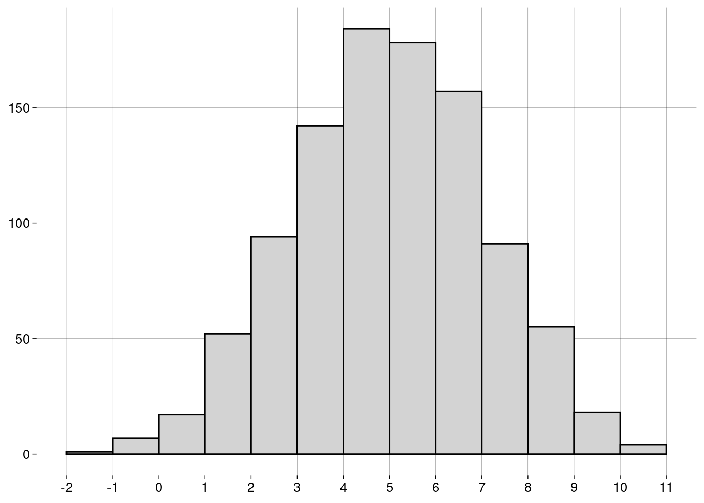
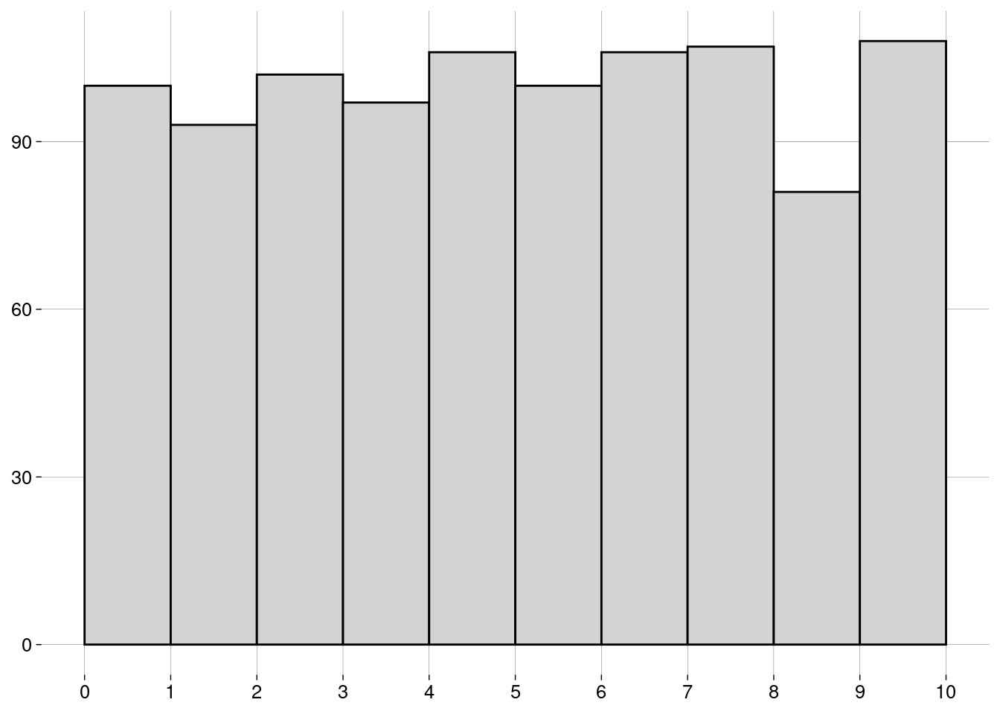
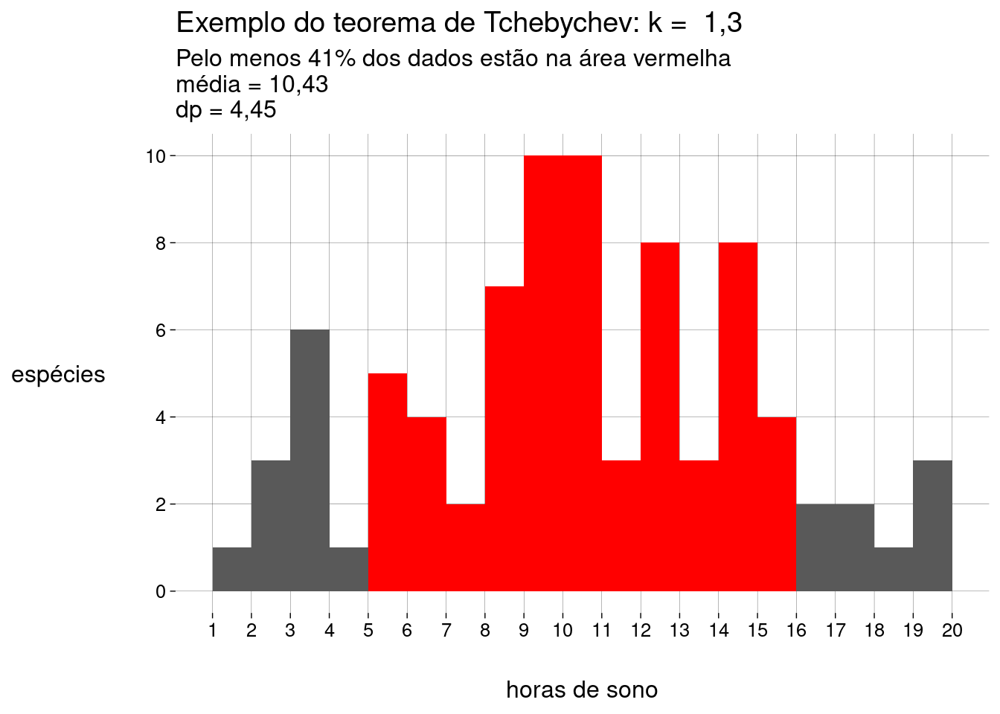

Capítulo 6 Medidas
6.2 Medidas de centralidade
6.2.1 Média
-
A média de uma população é escrita como \(\mu\), e é definida como \[\mu = \frac{\sum_{i=1}^N x_i}{N}\]
\(\sum_{i=1}^N x_i\) é a soma de todos os dados da população.
\(N\) é a quantidade de elementos na população.
-
A média de uma amostra é escrita como \(\bar x\), e é definida como: \[\bar x = \frac{\sum_{i=1}^n x_i}{n}\]
\(\sum_{i=1}^n x_i\) é a soma de todos os dados da amostra.
\(n\) é a quantidade de elementos na amostra.
O cálculo é essencialmente o mesmo. Só mudam os símbolos: \(N\) versus \(n\), e \(\mu\) versus \(\bar x\).
6.2.2 Mediana
Já aprendemos sobre a mediana na seção sobre boxplots.
A idéia é que, depois de ordenar os dados, \(50\%\) dos dados estarão à esquerda da mediana, e \(50\%\) à direita.
A mediana não é tão sensível a outliers quanto à média.
6.2.3 Moda
A moda é o valor mais frequente do conjunto de dados.
Pode haver mais de uma moda.
Não existe uma função para a moda em R base. Por quê?
Por incrível que pareça, é complicado definir a moda de forma a conseguir resultados interessantes.
-
Por exemplo, vamos definir um conjunto de \(1000\) valores numéricos distribuídos normalmente4, com média igual a \(5\) e desvio-padrão5 igual a \(2\):
normal <- rnorm(1000, mean = 5, sd = 2) -
O histograma dos nossos dados é
 -
Vamos calcular a moda com a função
mfv(most frequent value), do pacotemodeest:## Registered S3 method overwritten by 'rmutil': ## method from ## print.response httr# Por causa de um bug na função mfv, # precisamos de números com ponto decimal # (em vez de vírgula): options(OutDec = '.') mfv(normal)## [1] -1.148672129 -0.682877937 -0.482523483 -0.335385649 -0.273119881 -0.114708951 ## [7] -0.101033770 -0.007905002 0.093346323 0.170420577 0.210433523 0.269778817 ## [13] 0.280124212 0.400793803 0.507399634 0.597465218 0.645678665 0.645689269 ## [19] 0.717753736 0.734222148 0.754827402 0.807394512 0.815467545 0.878567244 ## [25] 0.978956208 1.061517450 1.062075755 1.068522436 1.074395214 1.082929481 ## [31] 1.108442433 1.176657199 1.190144113 1.214785104 1.270898694 1.306455097 ## [37] 1.314089639 1.358567364 1.381860202 1.431455517 1.437372624 1.437909056 ## [43] 1.473826840 1.475088493 1.484952016 1.503025776 1.513816862 1.515243278 ## [49] 1.533456830 1.546059792 1.556089262 1.618746591 1.633470999 1.635164028 ## [55] 1.644449991 1.669428295 1.677323549 1.686418941 1.688624124 1.742846095 ## [61] 1.766220154 1.785681647 1.786953138 1.798761360 1.806846269 1.808262670 ## [67] 1.824590691 1.837464698 1.851394435 1.872136450 1.880873399 1.885653559 ## [73] 1.887013570 1.897677900 1.915295703 1.976067542 1.982650530 2.018857741 ## [79] 2.042487354 2.068255882 2.082378015 2.110462652 2.112765752 2.121336196 ## [85] 2.126622423 2.128675644 2.155478106 2.155863367 2.159147913 2.176514140 ## [91] 2.182062191 2.203116853 2.203182274 2.205523420 2.208516126 2.245857041 ## [97] 2.308870449 2.324354104 2.334340277 2.335051300 2.350703634 2.356108957 ## [103] 2.366355679 2.391414747 2.394534984 2.400766350 2.438134592 2.448193337 ## [109] 2.473846997 2.488208540 2.500660480 2.504438783 2.504784124 2.529816515 ## [115] 2.530126347 2.538745122 2.550062699 2.559645377 2.565838291 2.572845102 ## [121] 2.580276549 2.582391254 2.612533026 2.630955943 2.632160349 2.634425847 ## [127] 2.639594995 2.639672152 2.648666516 2.652214541 2.668367601 2.671519727 ## [133] 2.682120184 2.687995031 2.691497989 2.713552818 2.746000227 2.780334171 ## [139] 2.780362802 2.782657032 2.809666863 2.811306374 2.817724959 2.826730789 ## [145] 2.830779371 2.847396960 2.852766755 2.853907037 2.854651333 2.856973340 ## [151] 2.881131593 2.885440824 2.906852297 2.908664195 2.909668551 2.918547070 ## [157] 2.926495924 2.930570316 2.932527526 2.932811477 2.940660152 2.952552094 ## [163] 2.962676608 2.963333214 2.963736635 2.976789116 2.983400904 2.987692177 ## [169] 2.989942541 2.994924978 2.996678047 3.005307390 3.008200053 3.012966520 ## [175] 3.014517884 3.033909604 3.039707758 3.041841897 3.044407030 3.049638346 ## [181] 3.055169180 3.062213226 3.067075365 3.084067726 3.088173294 3.088443653 ## [187] 3.109897149 3.117241558 3.118561308 3.119822393 3.120472182 3.125788384 ## [193] 3.133493294 3.134630032 3.147947159 3.154212666 3.159352100 3.167736148 ## [199] 3.168146804 3.174407051 3.176850577 3.183833919 3.188560979 3.193387713 ## [205] 3.197109898 3.198404112 3.209146572 3.215620141 3.223654945 3.253969892 ## [211] 3.257759873 3.263520766 3.263531927 3.268525350 3.286845151 3.292234065 ## [217] 3.299644249 3.301951337 3.310216785 3.328343522 3.333397877 3.339618476 ## [223] 3.348769560 3.358764590 3.360604538 3.366746846 3.369545524 3.386848128 ## [229] 3.419752558 3.424350615 3.427362029 3.435300533 3.442918580 3.468223179 ## [235] 3.468232371 3.513365479 3.526504553 3.541847396 3.555087155 3.565624607 ## [241] 3.579289059 3.580881861 3.583540328 3.593474992 3.602465776 3.606292885 ## [247] 3.613396894 3.624213091 3.630861447 3.636772350 3.643549953 3.658229673 ## [253] 3.660842337 3.661281065 3.667675644 3.669339098 3.670967456 3.673250496 ## [259] 3.678344254 3.680725616 3.683375775 3.686003349 3.695141913 3.698946901 ## [265] 3.708848047 3.709026386 3.725306170 3.733482766 3.745096305 3.749268858 ## [271] 3.750794184 3.763809108 3.767972741 3.800233403 3.817860335 3.821337491 ## [277] 3.826606985 3.826829077 3.830930428 3.832800198 3.836090244 3.842403320 ## [283] 3.844502353 3.846006614 3.852929735 3.855326533 3.857122948 3.858495058 ## [289] 3.876021126 3.881436730 3.882842817 3.883925859 3.888406993 3.892001106 ## [295] 3.893056129 3.896594477 3.900839406 3.902971164 3.904405391 3.913632498 ## [301] 3.921986578 3.922247243 3.923253958 3.923259264 3.925317138 3.967022881 ## [307] 3.968869550 3.970571605 3.976521160 3.976572016 3.989095880 3.997395627 ## [313] 3.997814324 4.014327597 4.017294993 4.020042525 4.043762248 4.057882209 ## [319] 4.059158179 4.059303119 4.068155099 4.074897138 4.076545201 4.079059823 ## [325] 4.088472629 4.089564340 4.100579777 4.117160304 4.133507821 4.142205113 ## [331] 4.146620647 4.156220392 4.168784977 4.172315086 4.176281780 4.176393305 ## [337] 4.182466379 4.183278494 4.186586697 4.191813818 4.212162390 4.216680166 ## [343] 4.265772065 4.268296335 4.272002002 4.274724153 4.278599621 4.283605617 ## [349] 4.285901783 4.294558475 4.296459905 4.305943661 4.316160968 4.316743605 ## [355] 4.319761373 4.321355376 4.325564422 4.325673295 4.326013658 4.326474845 ## [361] 4.326539374 4.350537452 4.363074743 4.363239370 4.370464033 4.371997521 ## [367] 4.372744215 4.374185670 4.378904227 4.391321995 4.394672829 4.396048092 ## [373] 4.396397941 4.401767017 4.404087602 4.411610568 4.413374630 4.420318375 ## [379] 4.423665067 4.429725214 4.433881151 4.435954488 4.439706299 4.440930314 ## [385] 4.450127435 4.459506738 4.466524303 4.478853599 4.483759853 4.486524187 ## [391] 4.489976599 4.495706406 4.497073774 4.500074877 4.503643002 4.510052099 ## [397] 4.510475842 4.511253325 4.517369108 4.519737260 4.519817028 4.534639187 ## [403] 4.541208470 4.542306975 4.547208251 4.547501538 4.549703358 4.551131469 ## [409] 4.551195026 4.551787402 4.561642939 4.571172853 4.581429809 4.592541219 ## [415] 4.593257643 4.593361504 4.593530919 4.593697261 4.605545452 4.612561887 ## [421] 4.618094863 4.619130969 4.619582231 4.620619310 4.623220849 4.629116717 ## [427] 4.630878823 4.637607282 4.637684489 4.638688469 4.641344458 4.645070149 ## [433] 4.646417974 4.649119714 4.656254472 4.676231893 4.684611060 4.693564939 ## [439] 4.702522345 4.703834085 4.706967973 4.713157776 4.722206804 4.725254509 ## [445] 4.735321054 4.735631898 4.737267691 4.739988172 4.748388353 4.748489451 ## [451] 4.752768766 4.753295350 4.765716780 4.769621323 4.773312894 4.773824409 ## [457] 4.779389890 4.781758955 4.792559298 4.793056613 4.798464331 4.802154237 ## [463] 4.809594995 4.814966149 4.820320726 4.830430109 4.830630894 4.830958945 ## [469] 4.836371403 4.838376672 4.846220473 4.852861706 4.855643436 4.874264545 ## [475] 4.874518536 4.879871393 4.882012809 4.882428091 4.891566646 4.895076362 ## [481] 4.904658350 4.905537639 4.908601737 4.910837758 4.915563942 4.926506120 ## [487] 4.932672451 4.935463203 4.935695714 4.939218706 4.949130118 4.954871699 ## [493] 4.957678972 4.960605137 4.979282279 4.988656516 4.989575878 5.008859629 ## [499] 5.017993196 5.022447192 5.023043388 5.029019255 5.033125144 5.038054057 ## [505] 5.039792322 5.052090496 5.053862964 5.062299437 5.064010099 5.064096364 ## [511] 5.068265138 5.078745391 5.085593263 5.091617429 5.091675363 5.092119366 ## [517] 5.100079160 5.103562519 5.108789104 5.116763633 5.133521338 5.142672420 ## [523] 5.150466657 5.151771304 5.154147607 5.154558865 5.158371553 5.162099536 ## [529] 5.163704094 5.179130658 5.187083462 5.201840741 5.204598195 5.206514612 ## [535] 5.208381119 5.214119277 5.215091502 5.220743803 5.226407259 5.241875206 ## [541] 5.245170033 5.272751381 5.289325895 5.291108774 5.300289477 5.305367805 ## [547] 5.308921985 5.314611416 5.321271544 5.321973394 5.322835844 5.325534656 ## [553] 5.360080998 5.367110320 5.376239186 5.382142881 5.386103190 5.390308744 ## [559] 5.392380957 5.403074477 5.404625872 5.405968627 5.411687250 5.418120550 ## [565] 5.423651342 5.430322540 5.441094882 5.448418774 5.451461162 5.456954202 ## [571] 5.460112465 5.463219511 5.466571294 5.473415012 5.474678764 5.475143155 ## [577] 5.477477410 5.481894295 5.484179573 5.484610136 5.494669315 5.495234795 ## [583] 5.505579167 5.505850816 5.507798777 5.510279006 5.513166414 5.518681773 ## [589] 5.536753833 5.541175699 5.543743688 5.555208478 5.555751991 5.557329587 ## [595] 5.564422693 5.568408327 5.570744862 5.572261575 5.573867464 5.576508281 ## [601] 5.580796952 5.584954767 5.586378721 5.593187280 5.599647105 5.604645230 ## [607] 5.606746148 5.609442321 5.611618848 5.614099931 5.621896565 5.622755946 ## [613] 5.640296855 5.643511557 5.656113274 5.666441601 5.668050590 5.669769707 ## [619] 5.704198259 5.709181446 5.724586628 5.725655605 5.729005988 5.729563175 ## [625] 5.732234626 5.736704760 5.736782247 5.745158331 5.748088849 5.750143420 ## [631] 5.755157276 5.770376020 5.772668352 5.779132873 5.784655759 5.791082306 ## [637] 5.792013838 5.794231947 5.794610982 5.796375412 5.805690903 5.814840699 ## [643] 5.818188315 5.830503637 5.840746069 5.842098141 5.857196320 5.877617849 ## [649] 5.882854694 5.895358301 5.897985314 5.898212672 5.899332648 5.902667265 ## [655] 5.904656937 5.913024613 5.926652161 5.928659387 5.930778557 5.935464959 ## [661] 5.937508677 5.942974787 5.943941371 5.946967778 5.948760912 5.950541193 ## [667] 5.956268884 5.961786516 5.963044215 5.965950992 5.968905423 5.973429485 ## [673] 5.978555365 5.979921662 5.983923885 6.001246201 6.013839155 6.015903770 ## [679] 6.018796301 6.026590776 6.034356206 6.036810539 6.037432941 6.037463324 ## [685] 6.040618941 6.041799249 6.050956264 6.053863942 6.061319936 6.073159420 ## [691] 6.073386522 6.089929934 6.094302443 6.109462585 6.110062939 6.115203586 ## [697] 6.122165524 6.123776294 6.125292595 6.125919013 6.125920467 6.128217329 ## [703] 6.131956369 6.143579805 6.145593083 6.166505359 6.169591095 6.169959825 ## [709] 6.172191082 6.173606486 6.174054327 6.178433969 6.182630704 6.185767290 ## [715] 6.185833614 6.190993666 6.196607030 6.196844006 6.197846622 6.199246816 ## [721] 6.212327342 6.212623866 6.217108774 6.217515528 6.228233586 6.235021443 ## [727] 6.247783260 6.257024907 6.264382943 6.270230148 6.272460015 6.279075168 ## [733] 6.288843200 6.289580789 6.290508423 6.291272495 6.299465126 6.317992859 ## [739] 6.339729888 6.345252363 6.345628775 6.347555965 6.353375834 6.359575263 ## [745] 6.361898555 6.371925779 6.383178329 6.389661760 6.407394284 6.410229704 ## [751] 6.410862816 6.413950769 6.415552923 6.422798577 6.437022898 6.445341207 ## [757] 6.449668185 6.461052740 6.462365288 6.463910266 6.474379610 6.479011632 ## [763] 6.485452724 6.498896618 6.499293792 6.520303835 6.544542903 6.547905520 ## [769] 6.552524481 6.554668715 6.578078758 6.579574255 6.582929453 6.594274780 ## [775] 6.600809088 6.601117713 6.609829002 6.619081964 6.619845151 6.626343063 ## [781] 6.631577425 6.657247779 6.666913494 6.668801927 6.680202688 6.683919422 ## [787] 6.695785188 6.698605116 6.699178217 6.708814359 6.712661221 6.723851672 ## [793] 6.724288788 6.747683252 6.748004626 6.764228197 6.765092129 6.777170882 ## [799] 6.780986432 6.783988946 6.791884648 6.792623044 6.802795697 6.808958480 ## [805] 6.810110983 6.811124589 6.814479663 6.818696350 6.825035066 6.830186456 ## [811] 6.839778167 6.840694331 6.843937187 6.848311806 6.862316678 6.864292481 ## [817] 6.889940649 6.899650361 6.901918073 6.910404895 6.915103070 6.916945864 ## [823] 6.925935522 6.929953569 6.930630121 6.942974689 6.944105615 6.977173548 ## [829] 6.980796164 6.992454264 6.995588842 6.996121203 7.006652421 7.016545843 ## [835] 7.056034680 7.062169001 7.068168281 7.075018948 7.081500539 7.082173585 ## [841] 7.083343923 7.089190147 7.108128836 7.129520641 7.139212591 7.152103963 ## [847] 7.159818196 7.180854265 7.182654046 7.185682692 7.186133177 7.191506350 ## [853] 7.216398931 7.220844285 7.230086144 7.232040765 7.248579402 7.255770239 ## [859] 7.272668808 7.280581131 7.288781637 7.289873117 7.290047917 7.315844349 ## [865] 7.338561512 7.343068708 7.345312002 7.365740181 7.369673818 7.373183743 ## [871] 7.378654701 7.385252886 7.387912466 7.417765892 7.423280593 7.425163660 ## [877] 7.429763497 7.430217140 7.445362821 7.483052957 7.487788052 7.538233792 ## [883] 7.553158220 7.556267891 7.558700898 7.564534646 7.578177448 7.584573775 ## [889] 7.596917307 7.601207098 7.622751037 7.626216846 7.635668564 7.656081498 ## [895] 7.664828148 7.671781209 7.680878977 7.693860445 7.702012964 7.710247979 ## [901] 7.720799097 7.727672186 7.728896720 7.734309415 7.750359546 7.774154803 ## [907] 7.777752270 7.778283097 7.806664874 7.830000814 7.836915418 7.837177591 ## [913] 7.849110920 7.877123497 7.887709183 7.913161305 7.929637480 7.929816160 ## [919] 7.931088574 7.935211630 7.960665337 7.990255881 7.999003000 8.000299977 ## [925] 8.002791001 8.007219880 8.012395783 8.013357002 8.016153292 8.024327938 ## [931] 8.052229182 8.086994240 8.113865000 8.126154939 8.130493509 8.144438302 ## [937] 8.169175928 8.181806972 8.211581739 8.218080480 8.262274877 8.265757347 ## [943] 8.269410898 8.273017643 8.277415294 8.282671419 8.284997009 8.297474821 ## [949] 8.314578713 8.349472663 8.358424033 8.367394544 8.407119953 8.477043410 ## [955] 8.482010875 8.492447494 8.499493806 8.527858938 8.531586587 8.542535166 ## [961] 8.559635291 8.577117325 8.608749268 8.619803357 8.630524378 8.633691649 ## [967] 8.660043512 8.699755221 8.703693386 8.726822370 8.754114703 8.754471612 ## [973] 8.869545847 8.885538345 8.902165301 8.916504119 8.977441456 8.991088245 ## [979] 9.042502318 9.056612969 9.076142874 9.189414086 9.214574409 9.296747692 ## [985] 9.299597187 9.391131730 9.479951494 9.534625324 9.547387177 9.628330763 ## [991] 9.696890805 9.709307420 9.844022599 9.866843325 9.893639132 9.999337939 ## [997] 10.345950075 10.452770250 10.512736160 10.760797088# Voltamos para a vírgula como separador decimal: options(OutDec = ',') O que houve?!
O problema é que não há valores repetidos no conjunto de dados! Por isso, todos os \(1000\) valores são modais.
-
Uma maneira de evitar isto é definir a moda como o centro do intervalo mais curto que contém metade dos dados. Usamos a função
mlv(most likely value):moda <- mlv(normal, method = 'venter') moda## [1] 5,034546 -
Esta moda estimada pode nem estar no conjunto de dados:
moda %in% normal## [1] FALSE Mas o resultado de
mlv()é útil, pois nos diz que, embora não haja valores repetidos, valores próximos de \(5\) são mais frequentes, como mostra o histograma.
6.2.3.1 Exercícios
-
Arrendonde os valores no vetor
normalpara \(2\) casas decimais e ache a(s) moda(s)com a função
mfv, ecom a função
mlv, usando o métodoventer.
Considerando o histograma, qual das respostas você prefere? Por quê?
6.3 Formas de uma distribuição
- A forma do histograma mostra aspectos importantes da distribuição dos dados.
6.3.1 Distribuição Uniforme
-
Se o histograma tem todas as barras aproximadamente da mesma altura, dizemos que a distribuição é uniforme:
 A distribuição uniforme não tem moda, já que todos os valores têm aproximadamente a mesma frequência.
6.3.2 Simetria
Se o histograma for simétrico (i.e., os lados esquerdo e direito são “espelhados”), dizemos que a distribuição é simétrica.
A distribuição normal do exemplo acima é simétrica.
A distribuição uniforme também é simétrica.
-
Para distribuições simétricas, a média, a mediana e a moda (quando existe e é única) são bem próximas.
-
Uma distribuição pode ser simétrica, mas ter duas (ou mais) modas diferentes:

Algumas distribuições não são simétricas, mas têm uma cauda longa à esquerda ou à direita.
Dependendo da cauda, as distribuições são chamadas de assimétricas à esquerda ou assimétricas à direita.
-
Um exemplo: receitas anuais (em milhões de dólares) de CEOs de grandes empresas:
## Rows: 500 ## Columns: 9 ## $ Rank <dbl> 1, 2, 3, 4, 5, 6, 7, 8, 9, 10, 11, 12, 13, 14, 15, 16… ## $ Name <chr> "John H Hammergren", "Ralph Lauren", "Michael D Fasci… ## $ Company <chr> "McKesson", "Ralph Lauren", "Vornado Realty", "Kinder… ## $ `1-Year Pay ($mil)` <dbl> 131,190, 66,650, 64,405, 60,940, 55,790, 51,525, 50,1… ## $ `5 Year Pay ($mil)` <dbl> 285,020, 204,060, NA, 60,940, 96,110, 100,210, 90,300… ## $ `Shares Owned ($mil)` <dbl> 51,9, 5010,4, 171,7, 8582,3, 21,5, 47,3, 128,2, 155,8… ## $ Age <dbl> 53, 72, 55, 67, 59, 57, 55, 59, 61, 60, 59, 56, 63, 5… ## $ Efficiency <dbl> 121, 84, NA, NA, 138, 36, 12, NA, 91, 131, 150, NA, 1… ## $ `Log Pay` <dbl> 8,117901, 7,823800, 7,808920, 7,784902, 7,746556, 7,7… -
Vamos usar apenas os nomes e os valores anuais:
-
Um histograma:
salarios %>% ggplot(aes(x = valor)) + geom_histogram(breaks = seq(0, 150, 2.5)) + scale_x_continuous(breaks = seq(0, 150, 10)) + labs(y = NULL)
É uma distribuição assimétrica à direita: a maior parte dos CEOs têm receitas anuais “baixas”, de menos de \(10\) milhões. À medida que examinamos valores maiores, a quantidade de CEOs vai diminuindo lentamente.
Observe que a longa cauda à direita “puxa” a média para um valor mais alto do que a mediana.
-
A moda, que corresponde à barra mais alta do histograma, é menor que a mediana (e que a média):
sumario <- salarios %>% summarise( moda = mlv(valor, method = 'venter'), mediana = median(valor), media = mean(valor) ) sumario -
Em um boxplot, também é possível detectar a assimetria pela grande quantidade de outliers em um extremo:
salarios %>% ggplot(aes(y = valor)) + geom_boxplot() + scale_x_continuous(breaks = NULL) + scale_y_continuous(breaks = seq(0, 150, 10))
Com distribuições assimétricas à esquerda, a situação se inverte: a média é menor que a mediana, que é menor que a moda.
6.4 Re-expressão
Muitas vezes, é recomendável transformar a escala dos dados para que uma distribuição assimétrica se torne simétrica.
-
No exemplo das receitas dos CEOs, podemos tomar os logaritmos dos valores, em vez dos valores:
salarios_log %>% ggplot(aes(x = log_valor)) + geom_histogram(bins = 20) + labs( x = TeX('$\\log_{10}$ valor'), y = NULL )## Warning: Removed 3 rows containing non-finite values (stat_bin).
O logaritmo de um número na base \(10\) é, essencialmente, a quantidade de dígitos do número, vista como uma grandeza contínua.
Logaritmos negativos vêm de valores entre \(0\) e \(1\).
Logaritmo zero vem do valor \(1\).
Valores iguais ou menores que zero não têm logaritmo definido.
-
Por isso a mensagem de aviso sobre \(3\) valores removidos. São valores iguais a zero:
Uma vantagem desta escala logarítmica é que podemos entender melhor o histograma. Os dados não estão amontoados de um lado só.
6.5 Medidas de posição
6.5.1 Quantis
Na seção sobre boxplots, falamos sobre quantis, que são medidas de posição.
-
Em R, a função
quantilecalcula quantis de um vetor:## 0% 25% 50% 75% 100% ## 0,00000 3,88500 6,96750 13,36125 131,19000 -
Você pode passar frações entre \(0\) e \(1\) para
quantile. Por exemplo, para calcular o primeiro, o quinto, e o décimo percentis6 das receitas dos CEOs:## 1% 5% 10% ## 0,48695 1,48405 2,19400
6.6 Medidas de dispersão
Tão importantes quanto as medidas de centralidade são as medidas de dispersão (ou espalhamento).
Elas informam o quanto os dados variam.
6.6.1 Amplitude
Uma medida simples é a diferença entre o valor máximo e o valor mínimo.
-
Lembrando do nosso exemplo das idades dos alunos:
idades## [1] 20 20 20 20 20 20 21 21 21 21 22 22 22 23 23 23 23 24 24 65 -
A função
rangeretorna o mínimo e o máximo:range(idades)## [1] 20 65 -
A amplitude destes dados é, então
## [1] 45 A diferença de idade entre o aluno mais novo e o mais velho é de \(45\) anos, um valor alto, por causa do velhinho.
6.6.2 IQR
Na seção sobre boxplots, também falamos sobre o intervalo interquartil (IQR).
-
No boxplot, é a altura da caixa. Para as idades dos alunos:
idades %>% as_tibble() %>% ggplot(aes(y = value)) + geom_boxplot() + scale_x_continuous(breaks = NULL) + scale_y_continuous(breaks = seq(20, 70, 5))
-
O IQR é a diferença entre o primeiro e o terceiro quartis:
summary(idades)## Min. 1st Qu. Median Mean 3rd Qu. Max. ## 20,00 20,00 21,50 23,75 23,00 65,00## [1] 3IQR(idades)## [1] 3 Ou seja, os \(50\%\) centrais dos alunos têm idade entre \(20\) e \(23\) anos, um IQR de \(3\).
É uma variação pequena, porém mais fiel à realidade do que a amplitude, que é alta por causa do velhinho.
Quanto maior o IQR, mais espalhados estão os dados.
6.6.3 Variância
-
Agora, vamos trabalhar com os pesos (kg) e alturas (m) de um time de basquete:
medidas <- tibble( altura = .025 * c(72, 74, 68, 76, 74, 69, 72, 79, 70, 69, 77, 73), peso = 0.45 * c(180, 168, 225, 201, 189, 192, 197, 162, 174, 171, 185, 210) ) medidassummary(medidas$altura)## Min. 1st Qu. Median Mean 3rd Qu. Max. ## 1,700 1,744 1,812 1,819 1,863 1,975summary(medidas$peso)## Min. 1st Qu. Median Mean 3rd Qu. Max. ## 72,90 77,96 84,15 84,53 89,10 101,25 A variância é a maneira mais usada de medir o espalhamento em torno da média.
Para calcular a variância das alturas e a variância dos pesos, precisamos calcular valores intermediários.
-
O desvio de um valor é a diferença entre o valor e a média. O desvio pode ser positivo ou negativo.
d_medidas <- medidas %>% mutate( d_altura = altura - mean(altura), d_peso = peso - mean(peso) ) d_medidas -
Vamos calcular o desvio médio das alturas e o desvio médio dos pesos:
Não foi uma boa idéia. O desvio médio sempre é igual a zero.7 (O R pode mostrar algum valor diferente de zero por causa da precisão limitada dos números de ponto flutuante.)
-
Como resolver isto? Elevando os desvios ao quadrado:
Agora temos os desvios quadrados, que são todos positivos.
-
O desvio quadrado médio vai ser a variância:
Uma vantagem da variância é que outliers (que têm desvios quadrados maiores) contribuem mais do que elementos próximos à média (que têm desvios quadrados menores).
Uma desvantagem da variância é que a sua unidade é o quadrado da unidade dos valores.
Neste exemplo, as unidades são \(m^2\) e \(kg^2\)!
6.6.4 Desvio-padrão
É melhor trabalhar com a raiz quadrada da variância, que chamamos de desvio-padrão.
-
As unidades são as mesmas que as unidades dos dados.
-
Claro que o R tem funções para calcular isso:
varesd(standard deviation):medidas %>% summarize( altura_var = var(altura), altura_dp = sd(altura), peso_var = var(peso), peso_dp = sd(peso) ) Mas os valores são diferentes dos que calculamos. Por quê?
6.6.5 Definições
-
Para uma população com \(N\) elementos e média \(\mu\), a variância é
\[ \sigma^2 = \frac{\sum_{i=1}^N (x_i - \mu)^2}{N} \]
e o desvio-padrão é
\[ \sigma = \sqrt{\frac{\sum_{i=1}^N (x_i - \mu)^2}{N}} \]
-
Para uma amostra com \(n\) elementos e média \(\bar x\), a variância é
\[ s^2 = \frac{\sum_{i=1}^n (x_i - \bar x)^2}{n-1} \]
e o desvio-padrão é
\[ s = \sqrt{\frac{\sum_{i=1}^n (x_i - \bar x)^2}{n -1}} \]
Nós calculamos a versão populacional destas medidas.
R calcula a versão amostral destas medidas.
Reveja os cálculos e entenda a diferença.
Note, também, que as medidas populacionais são representadas por letras gregas — \(\mu\), \(\sigma^2\), \(\sigma\) —, enquanto as medidas amostrais são representadas por letras latinas — \(\bar x\), \(s^2\), \(s\).
Mais adiante no curso, você vai entender por que o denominador da variância amostral é \(n - 1\), em vez de \(n\).
Nada é por acaso, nem mesmo em Estatística.
6.6.6 Exercícios
Quando a variância e o desvio-padrão de um conjunto de dados são iguais a zero?
-
Mostre que o desvio médio de qualquer conjunto de valores é igual a zero.
Ou seja, considere o conjunto
\[ \{x_1, x_2, \ldots, x_n\} \]
e prove que
\[ \sum_{i = 1}^n (x_i - \bar x) = 0 \]
Manipule apenas as variáveis \(x_i\). Não use exemplos, pois eles não provam o enunciado geral.
Dica: lembre que \(\displaystyle \bar x = \frac{\sum_{i = 1}^n x_i}{n}\).
6.7 Coeficiente de variação
Em um conjunto de dados, o desvio-padrão é uma medida importante da variação dos dados.
Mas a unidade do desvio-padrão muda de um conjunto de dados para outro: alturas em metros, pesos em quilos etc.
Podemos eliminar as unidades expressando o desvio-padrão em termos da média.
O resultado é a fração \(\frac{\sigma}{\mu}\) (na população) ou \(\frac{s}{\bar x}\) na amostra.
Esta fração é o coeficiente de variação (CV).
O CV não tem unidades.
-
Para as alturas do exemplo dos jogadores de basquete:
A média das alturas é \(1{,}82\) metros.
O desvio-padrão das alturas é \(0{,}09\) metros.
O CV é aproximadamente \(0{,}0473\).
statip::cv(medidas$altura)## [1] 0,04729982Em outras palavras, para as alturas, um desvio-padrão corresponde a \(4{,}73\%\) da média.
-
Para os pesos:
A média dos pesos é \(84{,}53\) quilos.
O desvio-padrão dos pesos é \(8{,}31\) quilos.
O CV é aproximadamente \(0{,}0983\).
statip::cv(medidas$peso)## [1] 0,09834649Em outras palavras, para os pesos, um desvio-padrão corresponde a \(9{,}83\%\) da média.
Segundo estes valores, a variação dos pesos é cerca de \(2\) vezes maior do que a variação das alturas.
O coeficiente de variação sempre faz sentido para dados do nível racional (veja a definição) — i.e., dados onde o zero é absoluto.
Para dados apenas intervalares, o uso do CV pode levar a conclusões absurdas, como você terá chance de ver no exercício.
6.7.1 Exercícios
-
Considere o seguinte conjunto de temperaturas (em graus Celsius):
celsius <- c(0, 10, 20, 30, 40) -
E as mesmas temperaturas (em graus Fahrenheit):
fahrenheit <- 9 * celsius / 5 + 32 -
Calcule para cada um dos dois vetores acima:
A média,
O desvio-padrão,
O coeficiente de variação.
As temperaturas são as mesmas (apenas em unidades diferentes), mas os CVs são diferentes. Por quê?
-
Agora, convertemos as mesmas temperaturas para a escala Kelvin:
kelvin <- celsius + 273.15 -
E para a escala Rankine:
rankine <- fahrenheit + 459.67 -
Calcule para cada um dos dois vetores acima:
A média,
O desvio-padrão,
O coeficiente de variação.
-
Compare:
As médias de
celsiusekelvin,As médias de
fahrenheiterankine,Os desvios-padrão de
celsiusekelvin,Os desvios-padrão de
fahrenheiterankine,Os coeficientes de variação de
kelvinerankine.
Explique o que houve.
6.8 Escores-padrão
Para qualquer conjunto de dados, a unidade usada é uma escolha arbitrária.
Para alturas, por exemplo, podemos usar metros, centímetros, pés, polegadas etc.
A escolha de unidades é tão arbitrária que podemos escolher uma unidade (que dificilmente vai ter nome) que faça com que a média do conjunto de dados seja zero e que o desvio-padrão seja igual a \(1\).
Isto equivale a tomar, como unidade, o desvio-padrão acima da média.
Os valores, nesta nova unidade, são chamados de escores-padrão.
Dizemos que os valores foram padronizados.
Vamos usar as alturas dos jogadores de basquete.
-
Para fazer a altura média virar zero, basta subtrair, de cada altura, a altura média:
alturas <- medidas$altura mean(alturas)## [1] 1,81875## [1] 0 -
Para fazer o desvio-padrão ser igual a \(1\), basta dividir estes valores pelo desvio-padrão dos dados originais:
sd(alturas)## [1] 0,08602656## [1] 1 -
Tome, por exemplo, o seguinte jogador:
altura <- alturas[1] altura## [1] 1,8## [1] -0,217956Faça as contas: o valor da altura padronizada deste jogador significa que a altura dele está \(0{,}217956\) desvios-padrão abaixo da altura média.
-
No geral:
Se a média for \(\bar x\), e
Se o desvio-padrão for \(s\),
Os escores-padrão \(z_i\) vão ser \[ z_i = \frac{x_i - \bar x}{s} \]
-
Em R, a função
scalefaz isso:medidas <- medidas %>% mutate(altura_padronizada = scale(altura)[,1]) medidas %>% select(altura, altura_padronizada)mean(medidas$altura_padronizada)## [1] -0,000000000000000004610683sd(medidas$altura_padronizada)## [1] 1 A função
scalefoi feita para receber e retornar matrizes. Como estamos trabalhando com vetores, usamosscale(altura)[,1]para tomar apenas a primeira (e única) coluna do resultado.
6.8.1 Exercícios
Por que, quando calculamos as alturas deslocadas divididas pelo desvio-padrão das alturas, temos certeza de que a média dos valores resultantes não mudou?
Padronize os pesos dos jogadores de basquete.
Confira a média e o desvio-padrão dos pesos padronizados.
Crie um scatterplot de peso por altura.
Crie um scatterplot de peso padronizado por altura padronizada.
Compare os dois scatterplots. O que muda de um para outro?
6.9 Teorema de Tchebychev
Grosso modo, quanto mais alto o desvio-padrão, maior é a distância da média até os valores.
Ou seja, quanto menor o desvio-padrão, maior é a proporção de valores que estão próximos à média.
-
O teorema de Tchebychev quantifica esta idéia:
Em qualquer distribuição, a proporção de valores dentro de \(\pm k\) desvios-padrão \((k > 1)\) da média é de, no mínimo \[ 1 - \frac{1}{k^2} \]
6.9.1 Exemplo
-
Lembre-se do conjunto de dados sobre os totais de horas de sono de diversos mamíferos:

-
Média e desvio-padrão:
media <- mean(df$value) media## [1] 10,43373dp <- sd(df$value) dp## [1] 4,450357 -
Qual a proporção de espécies que estão a \(1{,}3\) ou menos desvios-padrão de distância da média?
k <- 1.3 inicio <- media - k * dp inicio## [1] 4,648271fim <- media + k * dp fim## [1] 16,2192 -
O teorema diz que no mínimo a seguinte proporção das espécies está dentro deste intervalo:
proporcao_teorema <- 1 - 1 / k^2 proporcao_teorema## [1] 0,408284 -
Graficamente:
 -
Vamos conferir:
## [1] 83## [1] 64proporcao_real <- especies_intervalo / total_especies proporcao_real## [1] 0,7710843 Como o teorema usa apenas a média e o desvio-padrão, e mais nenhuma informação sobre a distribuição dos valores — forma, simetria etc. — o que ele garante é, muitas vezes, mais fraco do que a realidade.
Neste exemplo, o teorema garantia no mínimo \(40{,}83\%\) das espécies a \(1{,}30\) ou menos desvios-padrão de distância da média.
A proporção verdadeira é \(77{,}11\%\) das espécies.
O teorema está certo (claro), mas, sem mais informações sobre a distribuição dos dados, o teorema não pode ser mais preciso.